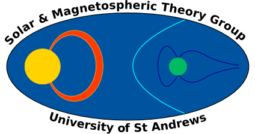
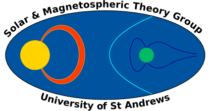

About
I am an applied mathematician at the University of St Andrews, conducting research in solar physics. At St Andrews, I am part of the Solar & Magnetospheric Theory Group within the School of Mathematics & Statistics.

I am an applied mathematician at the University of St Andrews, conducting research in solar physics. At St Andrews, I am part of the Solar & Magnetospheric Theory Group within the School of Mathematics & Statistics.
